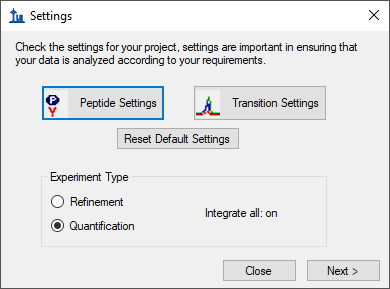
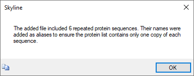
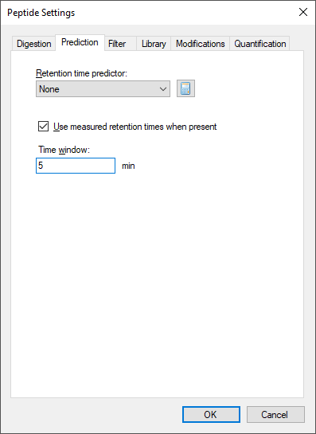
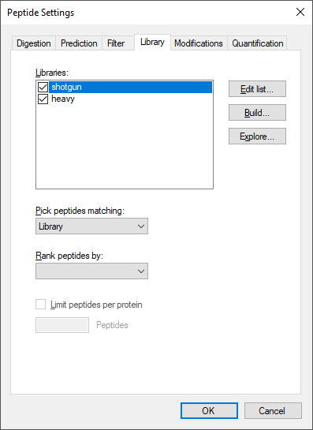
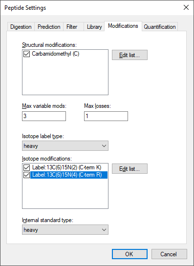

In this tutorial you will set up an acquisition method to quantify 31 peptides from 19 proteins of interest in murine fibroblasts using Parallel Reaction Monitoring (PRM). Briefly, the “Cell cycle mouse fibroblast” dataset used in this tutorial consists of murine fibroblasts in three different stages of the cell cycle: i) G1 phase, ii) S phase, and iii) G2 plus Mitosis phases. Each condition has three biological replicates. The entire dataset consists of 9 runs on a Thermo Fusion mass spectrometer employing the Orbitrap mass analyzer.
For more general information on how Skyline treats PRM data of any kind, you should consult the Parallel Reaction Monitoring tutorial.
To start this tutorial, download the following ZIP file:
https://skyline.ms/tutorials/PRM-Orbi.zip
Extract the files in it to a folder on your computer, like:
C:\Users\brendanx\Documents
This will create a new folder:
C:\Users\brendanx\Documents\PRM-Orbi
To begin this tutorial:

Once you have clicked Import FASTA, Skyline should appear and show a Settings form:

For a consistent and reliable set of steps through this tutorial, it is simplest to start from default settings. Otherwise, Skyline will attempt to start from your most recent settings in the hope that they may resemble what you will do next. To achieve a uniform starting point for this tutorial:
It is often a good idea to do a complete review of all the Peptide Settings and Transition Settings when starting new blank document like this, before adding any of the proteins and peptides you will target.
Enzyme: Select the proteolytic specificity of the enzyme that was used with your samples. The most frequent enzyme used in proteomics is trypsin, which cleaves after the C-terminal of lysine and arginine except if they are followed by proline. In this tutorial you may leave “Trypsin [KR|P]” selected.
Max missed cleavages: Set the number of missed cleavages that you would like to consider in your analysis. Fully tryptic peptides are preferable, but sometimes peptides with missed cleavages are also usable for quantification.
Background proteome: This setting allows you to build a background proteome from a protein FASTA file using the digestion settings defined above. Alternatively, you can directly add an already in-silico digested proteome file (file.protdb). The background proteome is useful to determine if a particular peptide is unique to your protein or if it is shared with other proteins present in your database. To generate a background proteome according to the digestion settings above do the following:
When the file is generated a warning message will appear to warn you about 6 repeated sequences in the FASTA file:

The generated proteome file should contain 16,800 proteins.
The background proteome file you just created can now be used in different projects.
Enforce peptide uniqueness by: offers the options –
The Peptide Settings – Digestion tab should now look like this:

Retention time predictor: A retention time predictor can be used to create scheduled methods and to support data analysis. This tutorial does not require retention time prediction. So, leave is as “None”.
Use measured retention times when present: Checking this option allows Skyline to use use measured retention times (instead of predicted) for retention time scheduling.
Time window: Specify the range of time you would like to use for your scheduled measurements.
The Peptide Settings – Prediction tab should now look like this:

In this tab you can define filters to select peptides with certain properties.
Min length/Max length: You can use these fields to restrict the number of amino acid residues you are willing to allow in your target peptides.
Exclude N-terminal amino acids: The N-terminus of a protein might be post-translationally processed (modified and/or cleaved). Therefore, it may not be suited for protein quantification. You can use this field to exclude these peptides from analysis. In this tutorial, you will simply trust the peptide spectrum matching results from a DDA experiment and not rely on this exclusion.
Exclude potential ragged ends: Ragged ends are peptides with KK, RR, RK or KR sequences at one or both ends. Such peptides might not be fully cleaved and hence may not be suited for quantification. However, if no alternative peptides are available one might rather quantify with a ragged end peptide then not at all. In this tutorial, you can leave this option unchecked.
Exclude peptides containing: This option allows you to discard a priori peptides that, based on sequence would undergo secondary reactions. The residues “Cys, Met, His” are prone to modifications, such as oxidation. The option “NXT/NXS” is a glycosylation motif. The option “RP/KP” describes Lysine or Arginine followed by Proline which sometimes can be cleaved by trypsin. In this tutorial, you will not use any of these options.
Auto-select all matching peptides: When this option is activated peptides for target proteins are automatically selected from a spectral library or from a background proteome file. If unchecked, you would need to make these choices manually. In this tutorial, you should leave this option checked.
The Peptide Settings - Filter tab should look like this:

In this tab you can insert or build spectral libraries containing MS2 spectra. Spectral libraries can be downloaded from public sources or built within Skyline from your own data. Multiple libraries can be selected at the same time. Be aware that the order in the list matters: the higher up in the list, the higher the priority in case there is an MS2 spectrum for the same peptide in more than one library.
In this tutorial, you will build a library from data obtained from a set of synthetic isotopically labelled peptides that were bought to match each endogenous peptide of interest that will be monitored in the samples. These heavy peptides were analyzed in an LTQ Orbitrap Velos using a CID method. To build the library you need the search engine output file and the raw data. In our case the search engine output file is in pep.xml format and the raw data in the standard mzXML format.
You will use a second library with shotgun data from the same samples that you will analyse using PRM. These data were acquired in an Orbitrap Fusion Lumos using an HCD method. As the generation of this library takes longer than the previous one, you will upload an already generated library file. In the Library tab do the following to add the second library:
Tip! You can visualize and browse all peptides of your library in the Spectral Library Explorer
under
View → Spectral Libraries.
Tip! Skyline supports building libraries from many peptide spectrum matching pipeline outputs. The list of supported files can be found online: https://skyline.ms/build-blib.url
Tip! In case you have more than one library, once you have a list of peptides uploaded, if both libraries contain an MS2 spectrum, at the top of the MS/MS spectrum tab you can select from the drop-down menu, which library spectrum you would like to see plotted.
Once the libraries are built, uploaded and activated, you can continue reviewing the other parameters in the Library tab:
Pick peptide matching: Select if peptides should be automatically selected according to the filter settings (defined in the Filter tab) before or according to the library settings defined below. In this tutorial you will use all pre-selected targeted peptides that appear in the library. You can leave the default setting (“Library”).
Rank peptides by: Here you can define a ranking of all peptides available for a given protein in the library based on peak intensities, number of spectra for a given peptide, or score for spectrum quality. In this tutorial you should leave this option inactive.
Limit peptides per protein: Limits the number of automatically selected peptides per protein from the library. In this tutorial you may leave this option blank.
The Library tab should look like this:

Structural modifications: Structural modifications concern chemical modifications of peptides. They can either be static (always present) or variable (sometimes present, sometimes not). By default “Carbamidomethyl (C)” is checked, which comes from the reduction and alkylation step during sample preparation to avoid formation of disulphide bonds between cysteine residues. Keep this modification.
Max variable mods and Max neutral losses: Select the maximal number of variable modifications and neutral losses according to your project. Leave the default setting (3 variable modifications and 1 neutral loss).
Isotope label type: Here you can define the isotope label type you plan to work with. For this tutorial leave the default “heavy” as the label type.
Isotope modifications: Here you can define the chemical composition of your isotopic modifications. To select the isotopic modifications:
Internal standard type: Define which labelling state should be your internal standard. In this tutorial, you will use spiked-in heavy reference peptides. So, you can keep the default setting “heavy”.
The Modifications tab should now look like this:

In this tutorial, you have learned.
1. Stacy D. Sherrod et al. Label-Free Quantitation of Protein Modifications by Pseudo-Selected Reaction Monitoring with Internal Reference Peptides. J. Proteome Res. (submitted)
2. Schilling, B. et al. Platform Independent and Label-Free Quantitation of Proteomic Data Using MS1 Extracted Ion Chromatograms in Skyline. Application to Protein Acetylation and Phosphorylation. Mol Cell Proteomics (2012).doi:10.1074/mcp.M112.017707